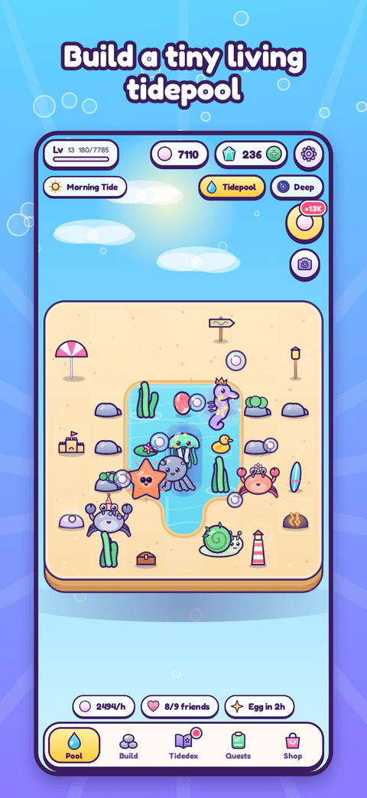
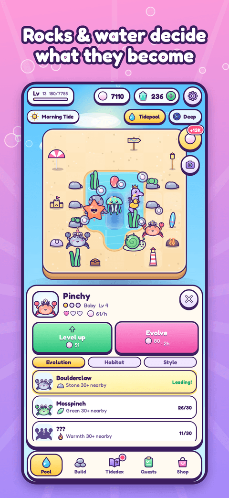
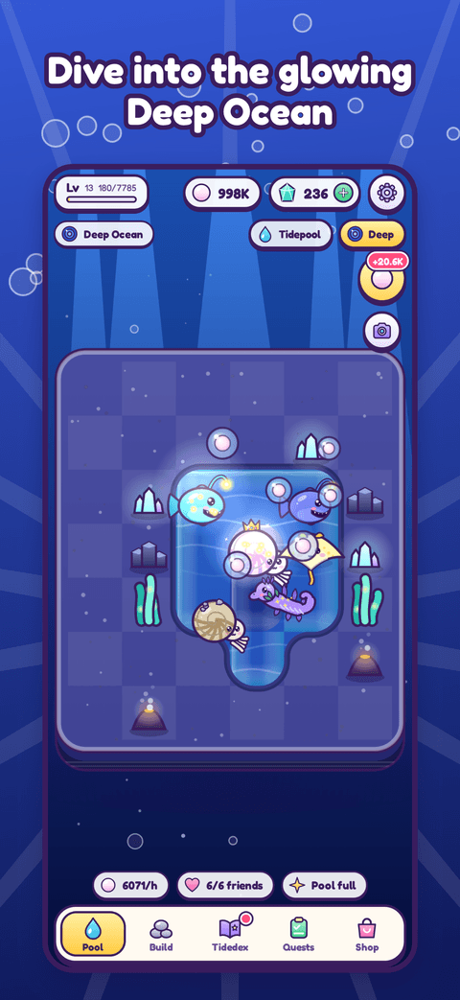

Build. Wait. Discover.
Arrange rocks, plants and water in your own tiny tidepool. The creatures that wash ashore evolve into different forms depending on the habitat around them — stony, leafy, warm, glowing, deep or calm. Your pool keeps earning pearls while you’re away, so check in a few times a day, pop your bubbles, open your Tide Gifts and see who your friends have become.



- 70 collectible creatures across 10 families, each with three evolutions and a legendary form
- Habitat-based evolution — you decide by how you arrange the pool
- Real-time tides: morning, afternoon & evening gifts, day-night sky and moon-phase Spring Tides
- Cozy & kind: no ads, no accounts, no tracking. Optional cosmetic decor, speed-ups and the premium Deep Ocean biome
Tiny Tides is free to play with optional in-app purchases.